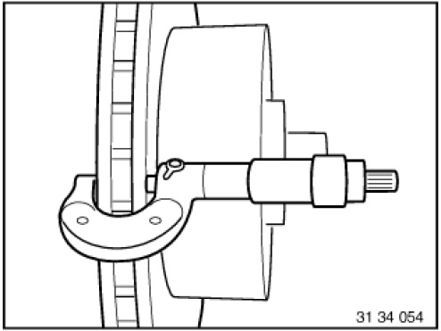
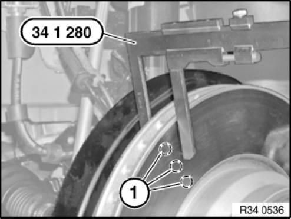

Brake Rotor/Disc: Testing and Inspection
34 00 ... Checking brake discs
Special tools required:

Necessary preliminary tasks:
- Remove wheels.

Checking thickness difference:
- Measure thickness difference within brake surfaces at 8 point (spread over the circumference) with a micrometer gauge
- Compare measurement result with set point value

Check minimum brake disc thickness:
- Position special tool 34 1 280 at three measuring points in area (1) and measure.
- Compare measurement result and lowest value with set point value